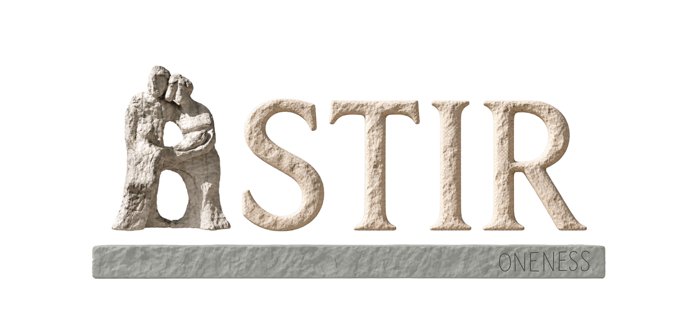
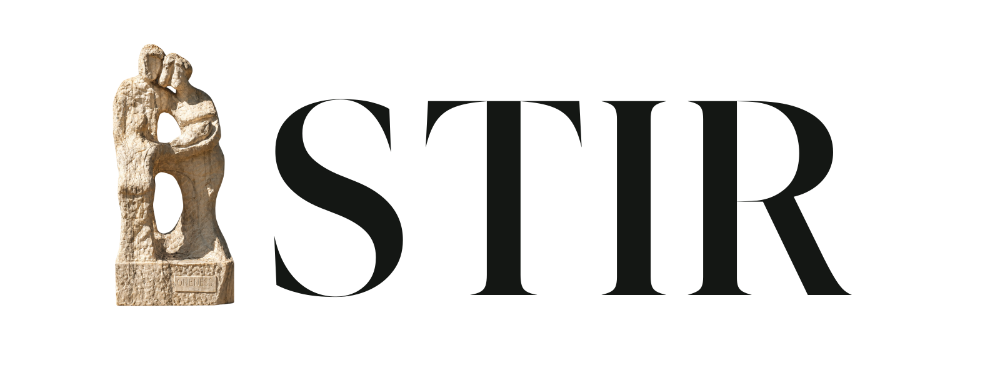
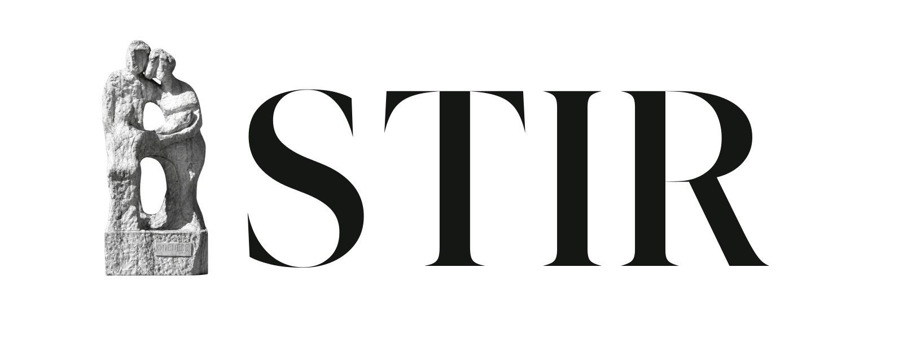
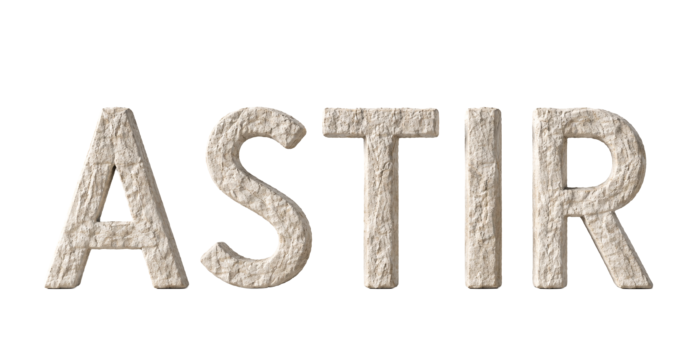
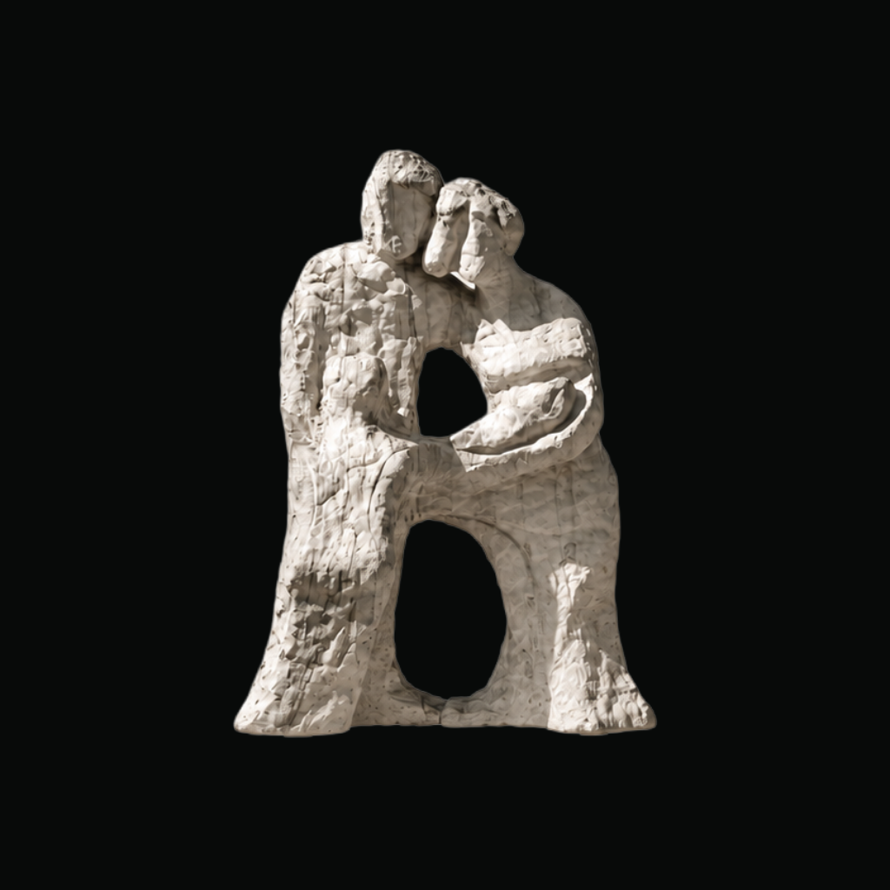

01 / Same heightThe statue shares the cap line with STIR.
46–53 / The next cut
Narrower proportions. Natural surfaces. A family of letters.
Eight directions, each on an iPhone. Compare the silhouette, the stone, and the color before choosing.
Ivory stone on ink. One color choice applies to every direction.
48 / Natural stone serif

The original statue’s narrow, uneven inscription has been traced by hand and placed at the right end of the foundation.
See the original inscription ↗Your references, saved

28 / Warm stone, current serif ↗
30 / Ink & stone, current serif ↗
32 / Carved sans ↗28 and 30 share the same serif lettering. The new round carries those treatments forward, adds a narrower serif, and compares natural stone and hand-sculpted letters.
Leave a trail for the next round
No directions shortlisted yet.
Start with the lettering. Compare equal and tall A. Then choose the foundation color and black icon.
Black backgrounds, carried forward
One symbol. Every profile.
App icon
Instagram profile preview

Places worth coming back to.
Through the people you trust.
Circle crop · centered for a profile photo
Download Instagram profile ↓TikTok profile preview
Your people. Your places.
Same symbol. A little breathing room.
Download TikTok profile ↓Profile layouts and handles are illustrative. Exports are square 1024 px PNGs; the circle previews show the safe crop. Existing non-black icon explorations remain in their saved rounds.